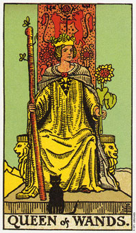

权杖(侍卫)象征一项新方案或挑战的消息或开始。
权杖侍卫意味着一个暂新的人生局面或新方案的开始。它通常是由身体上的行动来开始做某事的。塔罗牌的侍卫可形容孩子或任何二十二岁以下的人。
牌局中出现的侍卫可能是象征透过信件、电话或讯息带来新消息。然而它通常是形容一项新计划或人生新方向的开始。
侍卫代表牌组中空气的部分，权杖牌代表火。权杖侍卫就象征火中的空气元素。就一般观点来看，这一味理念和行动结合而展开新方案或迎接新挑战，或者换句话说，对你打算做的事进行计划。它代表思想先于行动，一个理念或计划正在形成。这张牌表示你正在梦想或思考你将会达到的目标，及置于面前的挑战。也可以形容展开一项方案的行动，因为权杖类型的人不喜欢怠惰。
如果这张牌代表一个小孩，他通常是情绪高昂、精力充沛、热情洋溢、积极而经常吵闹的。你知道的，当这个孩子在屋子附近时，那分贝有多高。这孩子喜欢呆在户外，而且在下雨天可能很难找到娱乐。
大体上的意义
权杖侍卫意指该是开始某些新事物的时候了。它是展开一项新方案或旅行(如果有其他旅行牌出现在牌局中)的行动，且将指引你一个新方向。
当牌局中出现了权杖侍卫，而你有已超过二十二岁，则它可形容想要掌控某新事物的行动――一项新工作，或某处理状况的新方法。这状况是你再度感觉年轻。
两性关系上的意义
权杖侍卫意指开始一段新关系，或者是进入现有关系中的新阶段。这段新阶段需要多加强身体上的努力，因为权杖类型的人需要肉体上的活动，好让他们觉得他们的努力是值得的。
在两性关系的算法中，权杖侍卫可以单纯表示该相关人士的本性，例如，一个充满热情但有时会失之急躁的年轻人。
用来描述一段两性关系，侍卫牌所叙述的是一种激情的互动，充满了户外的追逐，并需要有充沛的体力。
倒立权杖侍卫
权杖侍卫倒立意指思考太多而行动不足或这优柔寡断。侍卫的空气元素会使它想知道所有的细节――为何、何物、何时、何处以及何人――光这些便足以阻滞行动的开始。
正立的侍卫意指你很快就能使计划成形，而倒立的侍卫则暗示你花太多时间计划，相对地，实现计划的时间就少了。所以在行动之前犹豫不决是这张牌的另一个意思。
它可形容没有能力开始新事物，或是可以帮助你展开新方案的消息来源延迟了。
侍卫牌倒立也可以代表一个孩子，或是二十二岁以下的人。这个人缺少某些正立侍卫牌所代表的狂热和激情，而这可能是环境或教养给压抑下来的。
在两性关系的算法中，倒立侍卫牌可以表示一个不可预测的年轻人，他的烈性子或稍不留神，都可能在一段两性关系达到巅峰前就停滞不前了。
这张倒立侍卫牌所形容的两性关系是，由于不受拘束的狂热和激情，或伴侣之一需要经常性的挑战，而是这段关系提早结束。